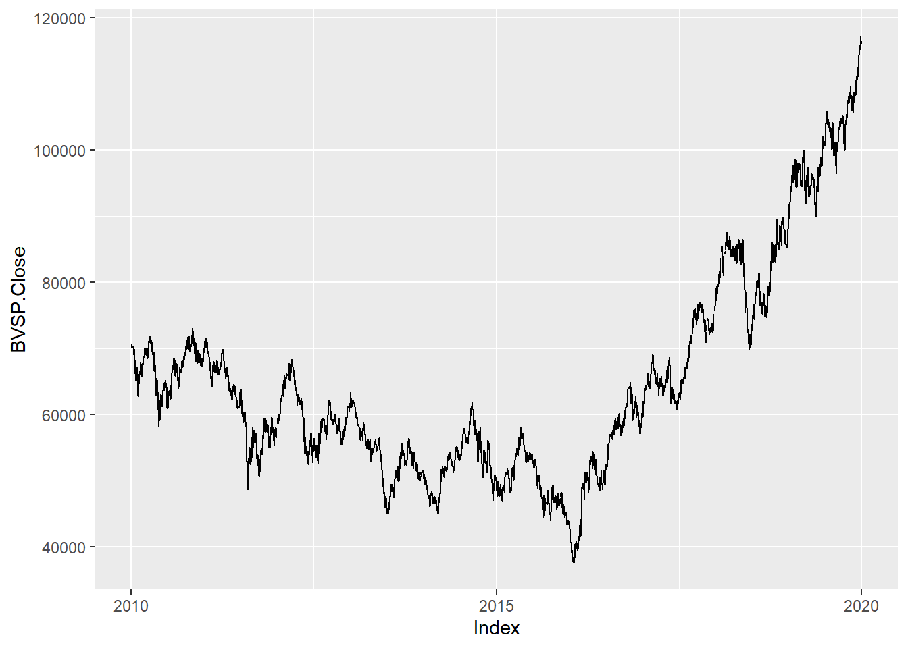
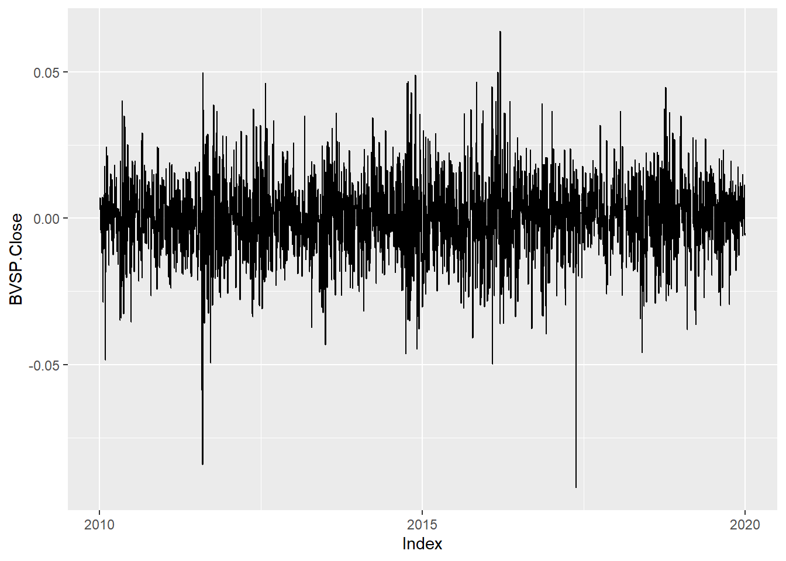
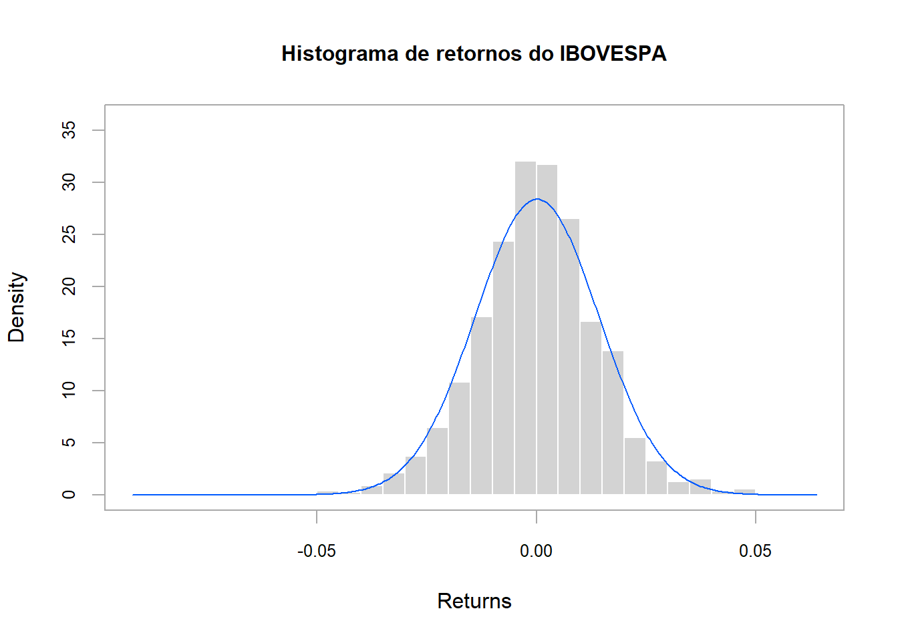
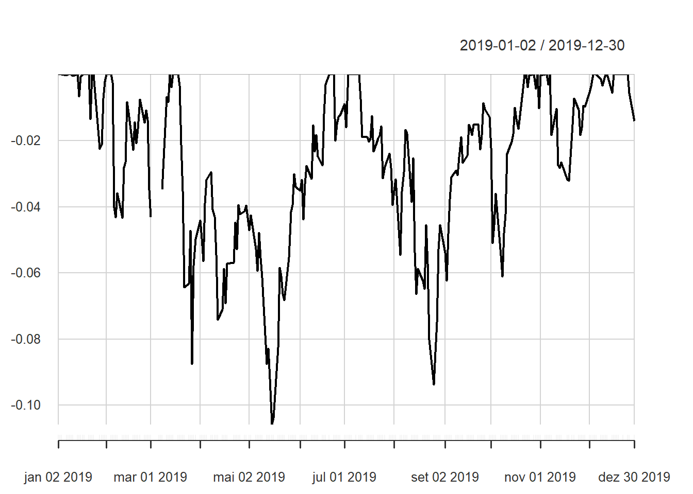
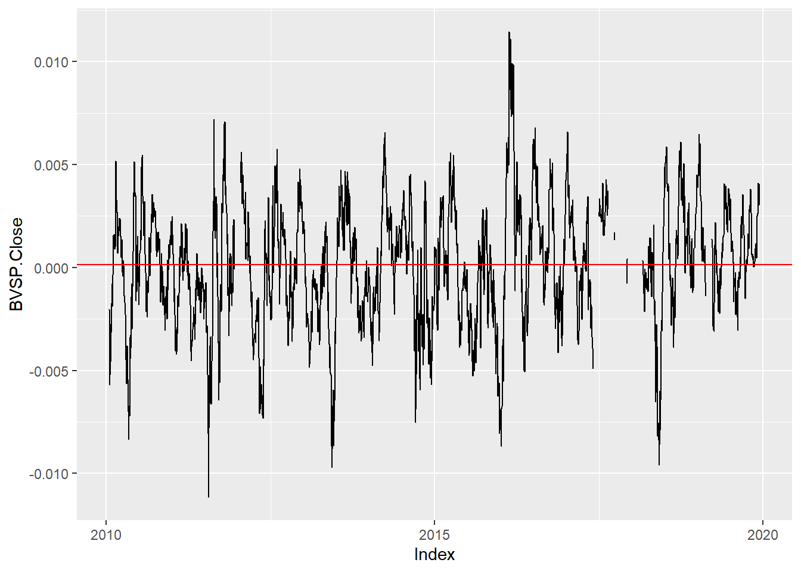
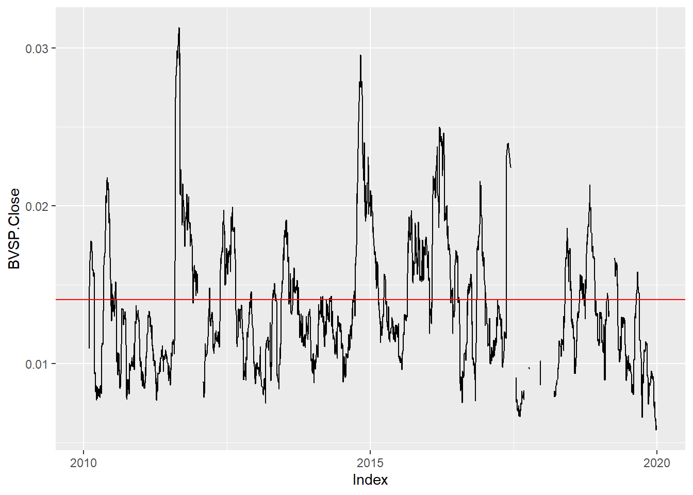
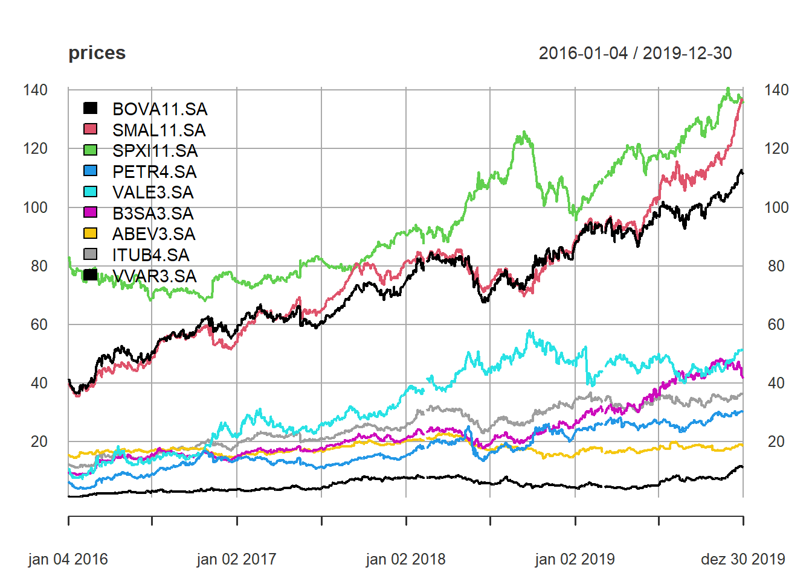
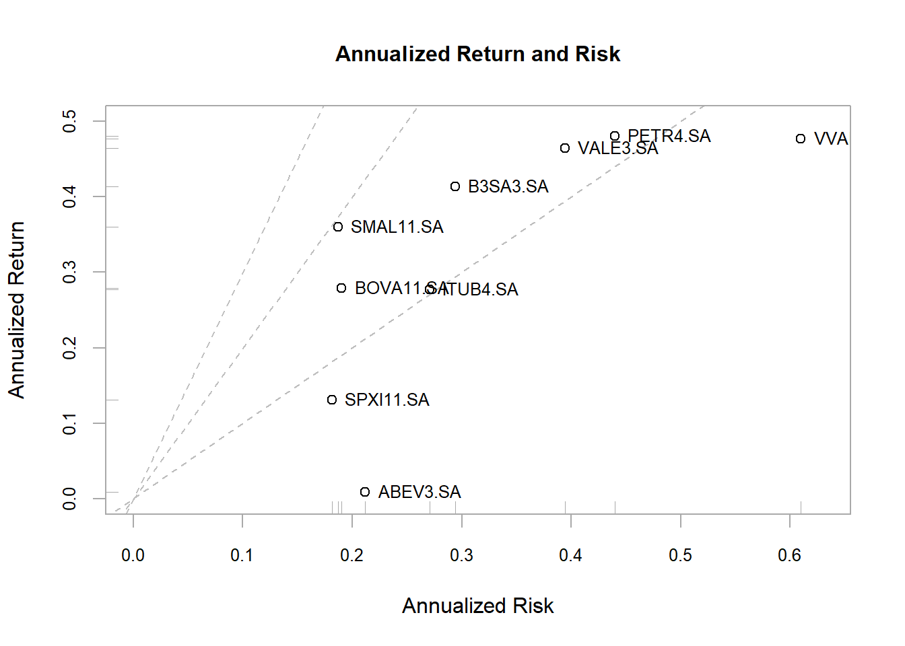

Capítulo 5 Análise de Risco
Acabamos de ver como trabalhar com retornos financeiros, qual a diferença entre retornos simples e log-retornos, porque é mais comum trabalharmos com os log-retornos e como calcular o retorno esperado e a volatilidade de ativos financeiros. Dando continuidade vamos entender o que fazer com tudo isso. Como fazer a análise de risco de ativos e como comparar ativos financeiros, levando em consideração o seu retorno esperado e a sua volatilidade (análise de risco e retorno).
Vamos ver que, em geral, o retorno e o risco costumam caminhar juntos de forma que para obter maiores retornos em investimentos devemos estar dispostos a assumir mais risco. Se algum investimento promete maior retorno com menos risco, tome cuidado, pode ser uma fraude!
5.1 Visualização dos Retornos
No Capítulo 4 vimos como calcular os retornos a partir da série de preços de um ativo financeiro, assim como calcular o seu retorno esperado e a sua volatilidade.
Mas um ponto muito importante na análise de ativos financeiro é a observação dos dados. Dessa maneira, vamos dar uma passo para trás e introduzir uma análise qualitativa dos retornos que envolve a visualização dos log-retornos.
Vamos começar obtendo a série de cotação de fechamento do índice IBOVESPA no período de 10 anos de 2010 a 2019.
Para obter a série do índice vamos utiliza a função getSymbols do pacote quantmod.
O símbolo do IBOVESPA é ^BVSP.
Como é fundamental ver os dados com os quais se está trabalhando, vamos visualizar a série do índice, pegando a série de cotações de fechamento.

O que observamos?
- De 2010 até 2016, aproximadamente há uma tendência de queda.
- A partir de 2016 há uma forte tendência de alta.
Agora vamos calcular os retornos das cotações de fechamento:
Vamos visualizar os retornos agora:

O que observamos?
- Oscilações tanto positivas quanto negativas
- Sem tendência
- Pontos extremos
- Quando temos pontos extremos podemos perceber uma aglomeração nesse sentido
Observando os retornos do índice temos um sobe e desce errático, sem tendência, bem diferente da série do índice que claramente apresenta tendência. Essa ausência de tendência é uma característica fundamental da série de retornos.
Na próxima seção vamos introduzir a análise estatística dos retornos e como ela pode nos ajudar na caracterização dessa variável.
5.2 Análise Estatística dos Retornos
Uma forma de descrever os retornos é assumir que podem ser descritos como uma variável aleatória e assim usar a teoria da probabilidade para descrever o seu comportamento.
A variável IBOVESPA_rets que tem a série de retornos é uma realização dessa variável aleatória, a qual vamos chamar de amostra aleatória.
A partir dessa amostra realizamos a análise estatística dos retornos, onde vamos apresentar algumas métricas úteis para descrever a variável aleatória, e muito úteis para comparar diferentes varíaveis aleatórias.
Pois se consideramos os retornos do IBOVESPA uma variável aleatória, os retornos no índice S&P 500, por exemplo, também podem ser descritos como uma variável aleatória só que uma diferente do IBOVESPA.
A descrição matemática de uma variável aleatória não será vista aqui, não é o objetivo. Entretanto, vamos apresentar algumas avaliações qualitativas que permitam caracterizar a variável aleatória e nos suportem na avaliação de risco dos ativos.
5.2.1 Estatísticas Descritivas
São medidas resumo que são calculadas para qualquer amostra aleatória. São úteis para caracterizar e entender a amostra aleatória, assim como comparar variáveis aleatórias diferentes.
São exemplos de estatísticas descritivas para uma amostra aleatória: a média, a mediana, alguns quartis e valores de mínimo e máximo.
No R a função summary provê algumas estatísticas descritivas da nossa série de retornos do IBOVESPA
## BVSP.Close
## Min. :-0.092107
## 1st Qu.:-0.008163
## Median : 0.000262
## Mean : 0.000146
## 3rd Qu.: 0.008523
## Max. : 0.063887
## NA's :23Note que estas medidas ajudam a entender como a amostra está distribuída. Conhecendo os pontos de mínimo e máximo temos o intervalo de cobertura da amostra. No caso dos retornos diários do IBOVESPA temos um mínimo de -0,092107 e um máximo de 0,063887. Com isso podemos concluir que em um intervalo de 10 anos o pior retorno diário para o IBOVESPA foi de -9% e o seu maior retorno foi de 6%. Como os retornos são calculados com base no preço de fechamento, temos que eventualmente ao longo de um dia de negociação o índice pode ter sofrido uma queda superior a 9%, contudo, para o fechamento este é o pior resultado no período. O primeiro quartil, que marca 25% dos dados da amostra, está em -0,008163 indicando que um quarto dos dados da amostra está abaixo de -0,8%, de outra forma temos que 75% dos dados está acima de -0,8%, ou seja, em 75% dos dias da amostra os retornos foram superiores a -0,8%. A mediana é ligeiramente superior a média, na verdade quase o dobro, isso pode ser uma indicação de qua amostra é negativamente assimétrica, pois a mediana é o meio da amostra e a média o seu ponto médio. Todavia, os valores aqui de média e mediana são muito próximos de zero, dessa maneira, a análise persiste, mas eventualmente esse efeito não seja significativo.
Além dessas medidas de posição, há também as medidas de dispersão. Já vimos no Capítulo 4 a variância e o desvio padrão (volatilidade)
## [1] 0.0001973679## [1] 0.01404877Mas temos também a assimetria (skewness), que indica o quão simétrica é a amostra em torno da média. Uma assimetria zero indica que a amostra é simétrica, a assimetria positiva indica uma amostra com maior peso para valores acima da média e assimetria negativa o oposto.
## [1] -0.1643848Conforme falamos na análise da mediana, a amostra apresentava uma assimetria negativa, e o skewness confirma essa hipótese.
Outra medida interessante é a curtose (kurtosis). A curtose é sempre positiva e quanto maior a curtose maior a probabilidade de que eventos extremos ocorram. Como balisador usamos a curtose da distribuição Normal (Gaussiana) que é uma distribuição muito importante e aparece em diversos fenômenos. Para a distribuição Normal e curtose é 3, dessa maneira, se a amostra apresenta uma curtose maior que 3 ela tem probabilidade de eventos extremos maior do que uma distribuição Normal.
## [1] 4.945592Como vemos os retornos do IBOVESPA apresentam uma curtose maior do que 3, logo, há uma probabilidade de eventos extremos maior do que uma distribuição Normal. Isso não é necessariamente bom ou ruim, porque os eventos extremos podem ser positivos ou negativos e apesar dos retornos extremos negativos serem indesejados, os retornos extremos positivos são altamente desejáveis.
Para efeito de comparação, vamos calcular as estatísticas descritivas para uma amostra aleatória Normal com média e variância dos retornos do IBOVESPA.
# aprox. 10 anos
x <- rnorm(2500,
mean = mean(IBOVESPA_rets, na.rm = TRUE),
sd = sd(IBOVESPA_rets, na.rm = TRUE))
c(
summary(x),
skewness = skewness(x),
kurtosis = kurtosis(x, method = "moment")
)## Min. 1st Qu. Median Mean 3rd Qu.
## -0.0466034113 -0.0092204068 0.0002447111 0.0001913628 0.0093492860
## Max. skewness kurtosis
## 0.0485846974 0.0394800800 3.0509902137Note que na amostra Normal os pontos de mínimo e máximo são bem menores que na distribuição de retornos do IBOVESPA, esse é um efeito que pode ser explicado, pela curtose mais elevada da distribuição de retornos.
5.2.2 Histograma
Um histograma é um gráfico que representa a distribuição construida a partir da amostra aleatória, é um gráfico da distribuição amostral.
No PerformanceAnalytics temos a função chart.Histogram.
IBOVESPA_rets %>%
chart.Histogram(breaks = 50,
main = "Histograma de retornos do IBOVESPA",
show.outliers = TRUE,
methods = "add.normal", lwd = 1)
O que observamos?
- Pico em torno de zero, região mais provável ou de maior frequência.
- Pontos distantes do zero, positivos e negativos, indicando a ocorrência de eventos extremos
- No geral, tipicamente simétrico, se ignorarmos os extremos.
A análise estatística dos retornos é fundamental pra entendermos a amostra e fazer qualquer tratamento nos dados para corrigir distorções que eventualmente surjam nos dados. É fundamental visualizar os dados, calcular as estatísticas descritivas e as estatísticas de dispersão e visualizar o histograma dos retornos, se comparar com a distribuição Normal, melhor ainda. Esse processo contribui para aumentar a sensibilidade com os dados e o senso crítico ao inicial uma análise.
5.3 Medidas de Risco
Vamos introduzir aqui algumas medidas de risco e utilizar alguns exemplos com o ativo BOVA11, que é um ETF (fundo negociado em bolsa) que reproduz o retorno do índice IBOVESPA. O BOVA11 não é exatamente, na vírgula, o índice IBOVESPA, mas é muito próximo do índice. Vamos criar as séries de preços do BOVA11, de retornos diários, de preços mensais e retornos mensais.
BOVA11 <- getSymbols("BOVA11.SA",
to = "2019-12-31",
auto.assign = FALSE)
BOVA11_rets <- BOVA11 %>%
Cl() %>%
log() %>%
diff()
BOVA11_monthly <- BOVA11 %>%
Ad() %>%
to.period()
BOVA11_monthly_rets <- BOVA11_monthly %>%
Cl() %>%
log() %>%
diff()Vamos considerar um cenário onde eu tenho uma carteira com 1000 ações do BOVA11. A série de BOVA11 termina em dez/2019, e a cotação de fechamento é R$ 111,23, logo o patrimônio da carteira é R$ 111.230,00.
## BOVA11.SA.Close
## 2019-12-30 111.23Dessa forma e para começarmos a discutir sobre as medidas de risco vou colocar algumas perguntas que precisam ser respondidas.
- Quanto eu (investidor) posso perder, em valor, para uma oscilação extrema do BOVA11 considerando o período de 1 mês?
- Qual a probabilidade de que eu sofra uma perda de mais de 5% em 1 mês?
- Qual a pior perda que eu posso sofrer no meu patrimônio?
Essas são perguntas objetivas que passam pela cabeça de todos os investidores e na tentativa de respondê-las nós vamos abordar as medidas de risco que nos permitem quantificar os pontos levantados.
5.3.1 Value at Risk
O Value at Risk (Valor em Risco - tradução livre) ajuda a responder a pergunta:
Quanto eu (investidor) posso perder, em valor, para uma oscilação extrema do BOVA11 no período de 1 mês e sabendo que o valor do ativo é R$ 111.23?
Para o horizonte de investimento de 1 mês, quanto pode ser uma oscilação extrema? É necessário definir o que vem a ser uma variação extrema neste horizonte de investimento Para isso vamos usar a série de retornos de 1 mês do BOVA11, pois é necessário que os retornos estejam ajustados ao horizonte de investimento definido, e vamos observar o seu histograma.
BOVA11_monthly_rets %>%
chart.Histogram(breaks = 30,
main = "Histograma de retornos do IBOVESPA",
show.outliers = TRUE,
methods = "add.normal", lwd = 1)
O que observamos:
- os maiores retornos positivos ocorrem acima de 15%
- os maiores retornos negativos ocorrem abaixo de 10%
- o histograma para os dados mensais não se aproxima da distribuição Normal e há alguns buracos no histograma, isso se deve ao fato da amostra ter poucos dados - note que definimos
breaks = 30
Observando o histograma vemos que as perdas extremas, abaixo de 10%, ocorrem com uma frequência muito baixa, pois estão na cauda da distribução.
Sabendo que o desvio padrão de BOVA11_monthly_rets é aproximadamente 5%, temos que as maiores perdas estão abaixo de 2 desvios padrão.
Isso é muito ou pouco?
Para nos ajudar nessa análise vamos olhar a distribuição Normal na figura abaixo:

Com 2 desvios padrão da média (centro da distribuição) temos, aproximadamente, 5% de probabilidade para as duas caudas, como a cauda negativa é a que nos interessa, temos 2,5% de probabilidade para perdas que estão abaixo de 2 desvios padrão.
Conclusão: A probabilidade de perdas maiores que 2 desvios padrão é de 2,5%, quando utilizamos a distribuição Normal como proxy.
Note que estamos fazendo uma aproximação considerando a distribuição Normal para chegarmos a essa probabilidade.
Agora a pergunta é: dado que eu sei que a probabilidade de termos uma perda maior que 2 desvios padrão é de 2,5%, como calcular essa perda em financeiro?
Para isso vamos usar a função qnorm que dada uma probabilidade ela retorna o valor associado, considerando uma distribuição Normal.
Dado que temos a média e o desvio padrão dos retornos mensais, vamos plugar estes parâmetros na distribuição Normal para obter a perda associada a probabilidade de 2,5%.
mu <- BOVA11_monthly_rets %>%
na.omit() %>%
mean()
sigma <- BOVA11_monthly_rets %>%
na.omit() %>%
sd()
qnorm(0.025, mean = mu, sd = sigma)## [1] -0.1015289Para essa amostra de retornos temos que a probabilidade de uma perda maior do que 10,15% é de 2,5%. De posse do retorno podemos aplicar a Eq.(4.7) para calcular a variação no preço para este retorno. Sabemos que último preço de BOVA11 é R$ 111,23, dessa forma a perda é dada por:
## [1] 10738.7Temos que para o horizonte de investimentos de 1 mês, a carteira com 1000 posições de BOVA11 tem um Value at Risk de R$ 10.738,70 com nível de confiança de 95%. Essa é a forma que se constuma ler o Value at Risk.
5.3.2 Drawdown
Dado o histórico do BOVA11, qual a pior perda que eu posso sofrer no meu patrimônio? quanto tempo eu vou ficar amargando essa miséria? Na tentativa de responder essa pergunta usamos o drawdown. O drawdown é uma perda acumulada em uma sequência de perdas. Como se dá isso? As séries de retornos são bastante simétricas em torno de uma média, que é bem próxima de zero. Dessa maneira, podemos supor que em geral os retornos sobem e descem com a mesma probabilidade. Entretanto, existem períodos que ocorrem sequências de quedas e é isso que o drawdown mede, dada uma sequência de quedas:
- Quando ela começa?
- Quando termina ?
- Qual a magnetude da perda?
No pacote PerformanceAnalytics tem algumas funções para trabalhar com drawdown.
Vejamos o gráfico do drawdown para os retornos diários do BOVA11 no ano de 2019.

Note que no gráfico as perdas começam, há uma recuperação, mas não suficiente para reverter o estado de perda.
Quando puxamos os dados de drawdowns para o ano de 2019 (usando a função table.Drawdowns do PerformanceAnalytics) temos:
## From Trough To Depth Length To Trough Recovery
## 1 2019-03-19 2019-05-16 2019-06-21 -0.1057 66 41 25
## 2 2019-07-11 2019-08-26 2019-10-22 -0.0937 74 33 41
## 3 2019-02-05 2019-02-11 2019-03-13 -0.0433 23 5 18
## 4 2019-11-08 2019-11-19 2019-12-04 -0.0322 17 7 10
## 5 2019-01-28 2019-01-28 2019-02-01 -0.0224 5 1 4Note que o maior drawdown gera uma perda de 10,57%, com uma duração de 66 dias, do começo até zerar a perda, a pior ponto acontece em 41 dias e após este ponto são 25 dias de recuperação.
5.3.3 Short-Fall Risk
Vimos como quantificar a perda dado um nível de risco associado a uma probabilidade no cálculo do VaR, agora vamos inverter a análise, e vamos calcular a probabilidade de ter uma perda maior que um determinado valor. Ou seja, como calcular a probabilidade de um retorno cair abaixo de 5%?
## [1] 0.1603421Para os retornos diários temos uma probabilidade de 0,16% de termos retornos menores que 5%.
## [1] 12.08791Os retornos mensais apresentam uma probabilidade de 12,09% de probabilidade para retornos menores que 5%.
5.4 Análise em Janela Móvel
Análise em janela móvel é útil para a avaliação da dinâmica temporal dos dados. Por exemplo, temos a série de retornos do IBOVESPA de 2010 a 2019 e podemos calcular a média e o desvio padrão para essa amostra.
## mean sd
## 0.0001459989 0.0140487672Uma pergunta que podemos fazer é, como se comporta a média e o desvio em uma janela móvel de 21 dias (tipicamente 1 mês em dias úteis).
Vamos usar a função rollmean onde passamos a série e o tamanho da janela e ela retorna uma série com as médias para as janelas contíguas de 21 dias.
rollmean(IBOVESPA_rets, 21) %>%
autoplot() +
geom_hline(yintercept = IBOVESPA_rets %>% na.omit %>% mean(), colour = 'red')
Marcando em vermelho a média da amostra completa, é interessante ver que há uma grande dispersão em torno desse valor e não há tendência clara de longo prazo, o que faz sentido (porque?).
A mesma análise pode ser realizada com o desvio padrão.
Neste caso usamos a função rollapply que recebe a série de retornos, o tamanho da janela e a função a ser aplicada a cada janela, aqui usaremos a função sd para cálculo do desvio padrão.
rollapply(IBOVESPA_rets, 21, sd) %>%
autoplot() +
geom_hline(yintercept = IBOVESPA_rets %>% na.omit %>% sd(), colour = 'red')
Curioso ver que em 2011 e 2014/2015 tivemos picos mais pronunciados no desvio padrão, indicando momentos de maior volatilidade.
5.5 Túnel de Volatilidade
Complementando a análise em janela móvel para os retornos, podemos também construir um túnel de volatilidade (ou envelope de volatilidade) que é útil para uma análise qualitativa dos retornos em conjunto com o desvio padrão em janela móvel.
No gráfico abaixo fazemos o gráfico dos retornos com o túnel de volatilidade e fica bem evidente que nos períodos de 2011 e 2014/2015 tivemos umas aglomerações de retornos, indicando um período de crise onde retornos mais extremos, bastante distantes da média, podem ocorrer.
plot(index(IBOVESPA_rets), coredata(IBOVESPA_rets),
type = "l",
ylim = c(-0.1, 0.1),
cex.axis = .7,
lwd = 1,
xlab = "Date", ylab = "Retorno",
main = "Retorno diário do IBOVESPA com intervalo de confiança de 2 desvios")
volatility <- rollapply(IBOVESPA_rets, 21, sd)
lines(index(volatility), coredata(volatility) * 2, col = "red")
lines(index(volatility), -coredata(volatility) * 2, col = "red")
5.6 Comparando Ativos
Até aqui realizamos a análise de risco para apenas um ativo. Agora vamos utilizar esta análise univariada e vamos aplicar a diversos ativos para entender como diferentes ativos podem ser comparados entre si. Vamos utilizar uma série gráficos aqui que permitem uma análise conjunta dos ativos de forma que façamos uma análise de risco comparando os ativos entre si.
5.6.1 Comparação de risco e retorno de diversos ativos: gráfico de risco x retorno
Vamos começar o gráfico risco x retorno, onde no eixo x é o risco e no y os retornos. Os passos são
- baixar as séries de preços dos ativos com o
quantmod - juntar as séries de diferentes ativos em um único objeto
xts - criar as séries mensais e calcular os retornos
- calcular médias e desvios padrão para cada um dos ativos
- montar o gráfico risco x retorno
5.6.1.1 Baixando as séries de preços
As séries dos ativos contidas em symbols são baixadas e depois juntadas com a chamada reduce(merge).
Essa é uma passagem tricky que vale a pena ser executada passo a passo para que seja bem compreendida.
symbols <- c("BOVA11.SA", "SMAL11.SA", "SPXI11.SA", "PETR4.SA", "VALE3.SA", "B3SA3.SA", "ABEV3.SA", "ITUB4.SA", "VVAR3.SA")
prices <- getSymbols(symbols, from = "2016-01-01",
to = "2019-12-31",
auto.assign = TRUE) %>%
map(~Ad(get(.))) %>%
reduce(merge) %>%
`colnames<-`(symbols)Obtidas as séries vamos ver o que temos em mãos.

Nada demais, séries diferentes com diferentes ordens de grandeza, o que prejudica a avaliação.
5.6.1.2 Calculando dados mensais
Usando a função to.monthly para obter as séries de preços mensais.
## BOVA11.SA SMAL11.SA SPXI11.SA PETR4.SA VALE3.SA B3SA3.SA ABEV3.SA
## 2016-01-31 39.19 37.71 78.32 4.490080 8.315054 8.961099 16.52255
## 2016-02-29 41.45 39.65 79.03 4.768392 10.102961 10.148924 15.72897
## 2016-03-31 48.64 44.25 75.37 7.709209 12.960191 13.406712 16.76330
## 2016-04-30 52.15 46.65 72.21 9.490397 16.843971 15.005033 17.28939
## 2016-05-31 47.02 44.26 76.83 7.458729 12.164614 13.986295 17.03972
## 2016-06-30 49.90 48.45 68.58 8.738958 13.918304 15.813653 16.98622
## ITUB4.SA VVAR3.SA
## 2016-01-31 12.00107 1.232770
## 2016-02-29 12.22963 2.236881
## 2016-03-31 15.04177 2.405890
## 2016-04-30 15.85434 2.953283
## 2016-05-31 14.02242 2.585365
## 2016-06-30 14.63821 3.082551Obtidas as séries de preços mensais vamos seguir com o cálculo dos retornos usando a já conhecida Return.calculate.
## BOVA11.SA SMAL11.SA SPXI11.SA PETR4.SA VALE3.SA
## 2016-01-31 NA NA NA NA NA
## 2016-02-29 0.05606632 0.05016571 0.009024516 0.06013862 0.1947609
## 2016-03-31 0.15995831 0.10976437 -0.047418157 0.48040645 0.2490539
## 2016-04-30 0.06967800 0.05281760 -0.042830831 0.20786486 0.2621104
## 2016-05-31 -0.10355118 -0.05259168 0.062016688 -0.24089542 -0.3254615
## 2016-06-30 0.05944800 0.09045107 -0.113594239 0.15840594 0.1346736
## B3SA3.SA ABEV3.SA ITUB4.SA VVAR3.SA
## 2016-01-31 NA NA NA NA
## 2016-02-29 0.12447481 -0.049222058 0.01886613 0.59581881
## 2016-03-31 0.27838779 0.063687794 0.20696922 0.07283741
## 2016-04-30 0.11263020 0.030900753 0.05261197 0.20499754
## 2016-05-31 -0.07030776 -0.014545521 -0.12278563 -0.13305074
## 2016-06-30 0.12279576 -0.003144956 0.04297763 0.175890805.6.1.3 Calculando média e desvio padrão
Tendo um objeto com todos os retornos mensais vamos calcular a média para cada ativo com colMeans que calcula a média de cada coluna de uma matriz (em nosso caso um objeto xts).
## BOVA11.SA SMAL11.SA SPXI11.SA PETR4.SA VALE3.SA B3SA3.SA
## 0.022195289 0.027360844 0.011658452 0.040536915 0.038657794 0.032656128
## ABEV3.SA ITUB4.SA VVAR3.SA
## 0.002599821 0.023515050 0.046892935O cálculo do desvio padrão utiliza a função StdDev do pacote PerformanceAnalytics.
## BOVA11.SA SMAL11.SA SPXI11.SA PETR4.SA VALE3.SA B3SA3.SA
## StdDev 0.05495577 0.05394365 0.05235481 0.1269872 0.113819 0.08488673
## ABEV3.SA ITUB4.SA VVAR3.SA
## StdDev 0.06119064 0.07817451 0.1760825Com isso fechamos os indicadores de risco e retorno para cada um dos ativos.
5.6.1.4 Construindo o gráfico risco x retorno
A parte mais fácil é construir os gráficos e utilizar os nomes dos ativos para identificá-los facilmente no gráfico.
plot(exp_risk, exp_returns,
xlim = c(0.05, 0.2),
ylim = c(0.0, 0.05),
pch = 16)
text(x = exp_risk,
y = exp_returns,
labels = colnames(exp_risk),
pos=4)
Interessante aqui é ver uma small cap (ação de empresa com menor tamanho de mercado), VVAR3, dispontando com a maior risco e retorno, seguida de PETR4 e VALE3, duas consagradas blueships. Outra coisa curiosa, o SMALL11 (ETF de small caps) com um risco ligeiramente menor que BOVA11 e com maior retorno.
Usando PerformanceAnalytics temos a função chart.RiskReturnScatter.

5.6.2 Gráfico boxplot com retorno dos ativos
O boxplot é uma forma de visualizar a dispersão dos dados e permite ainda a avaliação de pontos extremos na amostra, os outliers. Dado que possuimos uma amostra de retornos para cada ativo, podemos calcular um boxplot para cada ativo. Colocando tudo no mesmo gráfico nos permite comparar como os retornos dos ativos estão distribuidos.
prices_monthly_rets %>%
data.frame(Date = index(.)) %>%
remove_rownames() %>%
gather(Symbol, Returns, -Date) %>%
ggplot(aes(x = Symbol, y = Returns)) +
geom_boxplot()
5.6.3 Gráfico violinplot com as distribuições de retornos dos ativos
O violinplot é muito semelhante ao boxplot. É um pouco mais fancy apesar de não deixar clara a existência de outliers, mas impressiona em um ppt. Brincadeiras a parte ele apresenta uma distribuição continua para cada ativo, o que permite identificar a simetria das distribuições dos retornos.
prices_monthly_rets %>%
data.frame(Date = index(.)) %>%
remove_rownames() %>%
gather(Symbol, Returns, -Date) %>%
ggplot(aes(x = Symbol, y = Returns)) +
geom_violin(fill = "blue")
5.6.4 Correlação entre séries de retornos
Concluindo a parte multivariada precisamos calcular a correlação entre os ativos, não poderia ficar de fora.
A matriz de correlação é obtida com a função cor que retorna uma matrix quadrada com as correlações entre cada um dos pares de ativos e 1 na diagonal principal, como é uma matriz de correlação.
## BOVA11.SA SMAL11.SA SPXI11.SA PETR4.SA VALE3.SA B3SA3.SA
## BOVA11.SA 1.0000000 0.8719722 -0.47764813 0.8684556 0.4678069 0.7619350
## SMAL11.SA 0.8719722 1.0000000 -0.51911630 0.6452371 0.3061980 0.6321611
## SPXI11.SA -0.4776481 -0.5191163 1.00000000 -0.4666173 -0.1148997 -0.4768917
## PETR4.SA 0.8684556 0.6452371 -0.46661726 1.0000000 0.4813710 0.6735395
## VALE3.SA 0.4678069 0.3061980 -0.11489970 0.4813710 1.0000000 0.2238908
## B3SA3.SA 0.7619350 0.6321611 -0.47689171 0.6735395 0.2238908 1.0000000
## ABEV3.SA 0.4264350 0.4600609 -0.01728933 0.2039109 -0.0182789 0.3576270
## ITUB4.SA 0.9113159 0.7489051 -0.47870759 0.7764732 0.3262518 0.6980961
## VVAR3.SA 0.5137772 0.5543491 -0.32382206 0.2988384 0.2077724 0.4305646
## ABEV3.SA ITUB4.SA VVAR3.SA
## BOVA11.SA 0.42643495 0.9113159 0.5137772
## SMAL11.SA 0.46006094 0.7489051 0.5543491
## SPXI11.SA -0.01728933 -0.4787076 -0.3238221
## PETR4.SA 0.20391093 0.7764732 0.2988384
## VALE3.SA -0.01827890 0.3262518 0.2077724
## B3SA3.SA 0.35762698 0.6980961 0.4305646
## ABEV3.SA 1.00000000 0.3439021 0.3857068
## ITUB4.SA 0.34390212 1.0000000 0.3900220
## VVAR3.SA 0.38570681 0.3900220 1.0000000A matriz de covariância é calculada com a função cov.
## BOVA11.SA SMAL11.SA SPXI11.SA PETR4.SA VALE3.SA
## BOVA11.SA 0.003020137 0.002584975 -1.374289e-03 0.006060672 0.0029261381
## SMAL11.SA 0.002584975 0.002909918 -1.466093e-03 0.004419971 0.0018799989
## SPXI11.SA -0.001374289 -0.001466093 2.741026e-03 -0.003102253 -0.0006846843
## PETR4.SA 0.006060672 0.004419971 -3.102253e-03 0.016125738 0.0069575226
## VALE3.SA 0.002926138 0.001879999 -6.846843e-04 0.006957523 0.0129547701
## B3SA3.SA 0.003554439 0.002894729 -2.119416e-03 0.007260435 0.0021631714
## ABEV3.SA 0.001434007 0.001518591 -5.538853e-05 0.001584475 -0.0001273063
## ITUB4.SA 0.003915142 0.003158147 -1.959260e-03 0.007708173 0.0029029063
## VVAR3.SA 0.004971693 0.005265503 -2.985239e-03 0.006682091 0.0041640788
## B3SA3.SA ABEV3.SA ITUB4.SA VVAR3.SA
## BOVA11.SA 0.003554439 1.434007e-03 0.003915142 0.004971693
## SMAL11.SA 0.002894729 1.518591e-03 0.003158147 0.005265503
## SPXI11.SA -0.002119416 -5.538853e-05 -0.001959260 -0.002985239
## PETR4.SA 0.007260435 1.584475e-03 0.007708173 0.006682091
## VALE3.SA 0.002163171 -1.273063e-04 0.002902906 0.004164079
## B3SA3.SA 0.007205756 1.857612e-03 0.004632551 0.006435678
## ABEV3.SA 0.001857612 3.744295e-03 0.001645073 0.004155837
## ITUB4.SA 0.004632551 1.645073e-03 0.006111255 0.005368717
## VVAR3.SA 0.006435678 4.155837e-03 0.005368717 0.031005042A função chart.Correlation do PerformanceAnalytics traz um gráfico bem interessante e completo da correlação entre os ativos.
 Onde além dos valores de correlação também traz os níveis de significância de cada estivativa.
Note que ABEV3 e VALE3 apresentam uma correlação muito baixa entre si, o que veremos no próximo capítulo, é uma boa característica quando falamos em diversificação.
Onde além dos valores de correlação também traz os níveis de significância de cada estivativa.
Note que ABEV3 e VALE3 apresentam uma correlação muito baixa entre si, o que veremos no próximo capítulo, é uma boa característica quando falamos em diversificação.
5.7 Exercícios - Análise de Risco
- Para a série de preços da WEG (WEGE3.SA), calcular:
- Retornos diários logaritmicos
- Volatilidade em janela móvel
- Gráfico de túnel de volatilidade
- Para a série de retornos diários logaritmicos
- Fazer o gráfico do histograma
- Com a média e variância da amostra fazer o gráfico da densidade de probabilidade da distribuição normal. Comparar os gráficos. O histograma da amostra parece com uma distribuição normal?
- Calcular o VaR, Drawdown e Short-fall Risk para a Magazine Luiza (MGLU3.SA).